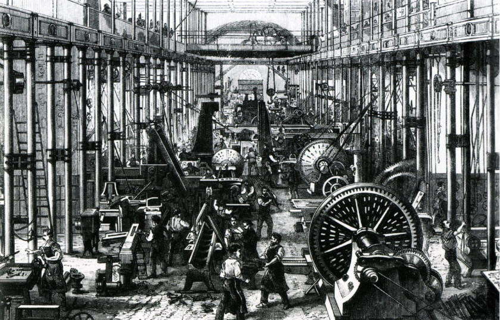
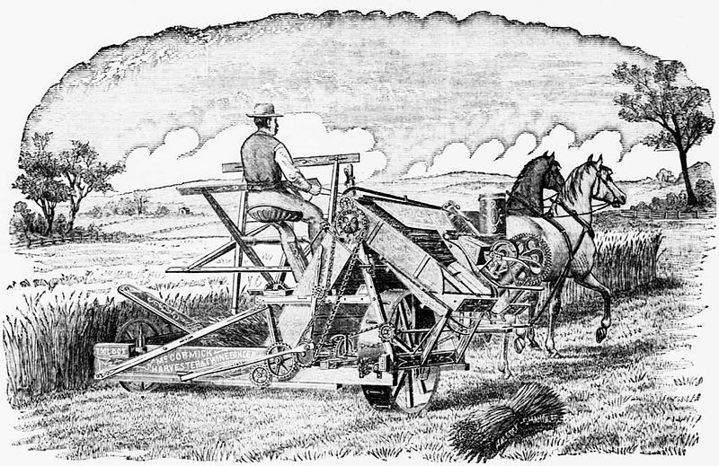

В истории можно говорить о многих этапах промышленной революции. Первой была неолитическая революция, которая произошла в четвертом веке до нашей эры. Неолитическая революция привела к огромным изменениям в жизни человека — она улучшила повседневный быт, вызвала более быстрое развитие, ряд других изменений. Внедрив изобретение колеса, она значительно улучшило качество жизни и эффективность труда, а значит и развитие экономики и технологий. Исследователи также считают, что освоение добычи и обработки железа было не менее важно, это привело к модернизации инструментов, средств производства — этот этап называется железной революцией.
Следующим этапом, который сыграл важнейшую роль, были географические открытия на рубеже XIV и XV веков. Они показали среднему человеку, что существуют другие страны и культуры, целые регионы, которые населены другими людьми. Географические открытия в значительной степени способствовали расширению знаний, расширению горизонтов человеческого мышления, а также революции, в основном в кулинарной сфере, путем импорта ряда специй и товаров, которые использовались во многих европейских кухнях.
Промышленная революция — это термин, введенный экономистами в двадцатом веке, которым они называют изменения или серию изменений в социальной, экономической и политической жизни, которые должны привести к улучшению жизни людей, развитию экономики, изменению многих привычек и развитию межличностного общения.
Промышленной революции предшествовали попытки локальной индустриализации (организация производства владельцем капитала в одном месте с использованием машин и свободного труда), например концентрация производства с более широким использованием модернизированных старых технологий (мануфактуры), в условиях господства традиционных социальных структур (системы гильдий, крепостничества).
Большие изменения происходили и в сельском хозяйстве Англии. В восемнадцатом веке более бедные фермеры, которые не могли позволить себе развивать свою землю, просто продавали ее, а затем работали на фермах более богатых соседей, а те, в свою очередь, выдвигали разные идеи, которые могли бы повысить производительность труда. Например, начали применять удобрения, на поля были выведены сельскохозяйственные машины, такие как механическая сеялка. Эти изменения называются аграрной революцией.
Постоянный технический прогресс, возможный благодаря системе финансирования производства как частными банками, так и Банком Англии, обеспечил непрерывный рост производства, снижение цен и расширение рынка.